Analysis of Movies and TV Shows on Netflix
Back to Visualization
Introduction:
Netflix is a popular OTT platform that has several movies and TV shows of different genres and multiple languages. It has millions of subscribers from all over the world and apart from containing several movies and TV shows, Netflix also provides the users with the show’s ratings, cast details, and descriptions of the shows.We are creating a visualization to analyze the movies and tv shows on Netflix using javascript and D3.
Methodology:
Started with understanding the data and how the data can be represented using the available charts and which suits the best to visualize the data to get an overview of the information provided in the data.
After going through the data thoroughly, decided on what charts to use to represent them.
Then moved on to constructing the required charts and maps to complete the visualization as decided from the initial work on the data.
Components:
Map:The world map is onstructed using d3 to represent the movies and tv shows according to the country where the show was produced.
Scatter plot:A scatter plot was used to show the Netflix shows released in each year from 1925 to 2021. Scatter plot was used because it best suits for the representation of time series data .
Bar chart:To understand the shows by genre, and by the duration with the data in the netflix data file, we chose Bar chart to depict the data as we want to compare the shows of genre and duration respectively.
Pie chart:There are different rating groups and to represent the shows by rating we have used pie charts.
Interactivity:
To make the visualization interactive we have added the following to the visualization:
- Allowing users to filter the tv shows by movies or tv shows using radio buttons.
- When hovering over the points in the map, scatter plot, bar and pie charts , user can see the respective details of the shows.
- Map and scatter plot are correlated in a way that when clicking over a country on the map,the scatter plot will change according the shows released each year from that country.
- In the same way, when a point on the scatter plot is clicked, the shows of that year released from countries will be given on the world map.
- The genre and ratings are linked in a way that when a bar of a particular genre is clicked on the bar chart, the rating distribution of all shows of that genre will be given in the pie chart
- Zoom functionality has been provided, using which the world map can be zoomed in and out, also panning can be done.
- We have also provided the functionality that when user clicks on the bars of bar chart for shows by duration,the details of those shows will be given in a table format.
Observations:
Visualization has been helpful in understanding the data more and to get insights, which would have been very difficult by just looking at the raw data provided. We could make the following observations from the visualization:
- Movies released in each year were shown through scatterplot and when hovering over the points we get the shows count for that year.In 2018, highest number of shows with a count of 1147 were released.
- Most number of movies released in a year was 767 in 2017 and 2018. Most number of tv shows released in a year is 436 in the year 2020.
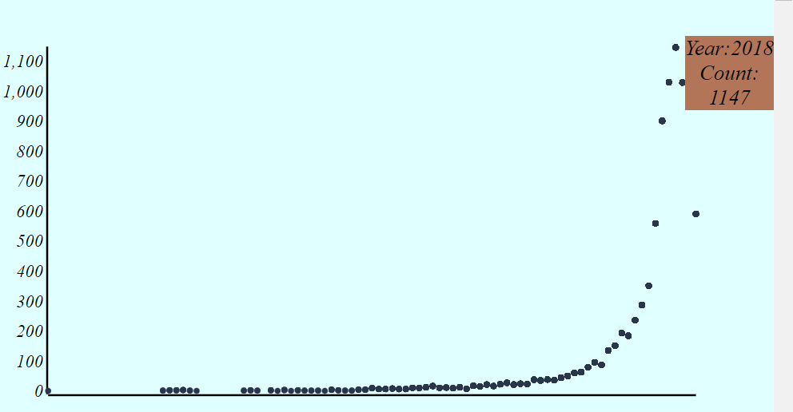
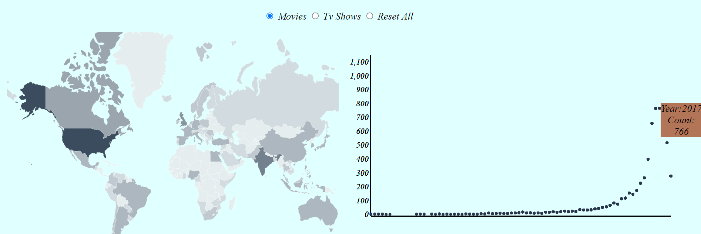
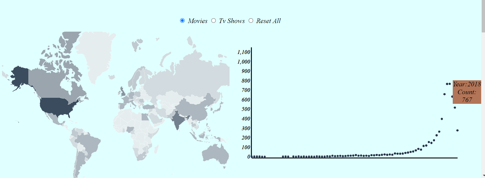
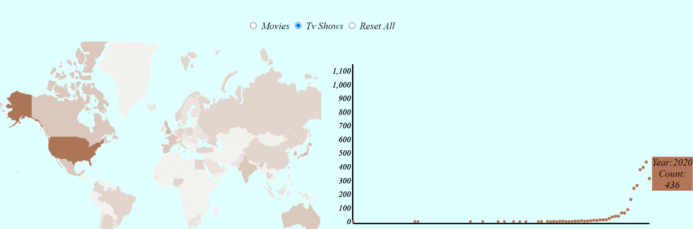
- USA has released most number of shows with a count of 3552 and it was highest in both movies and tv shows separately with a count of 2540 and 1012 respectively.
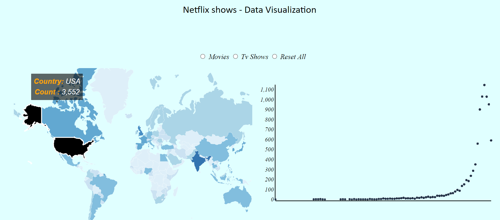
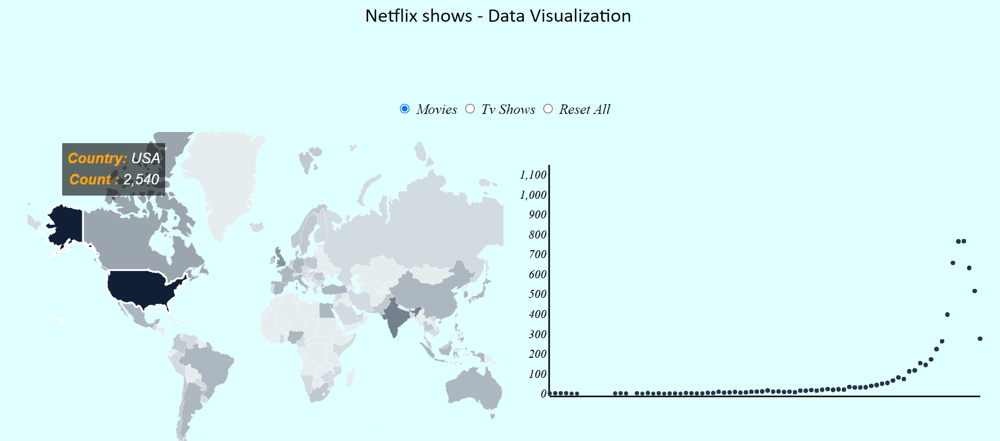
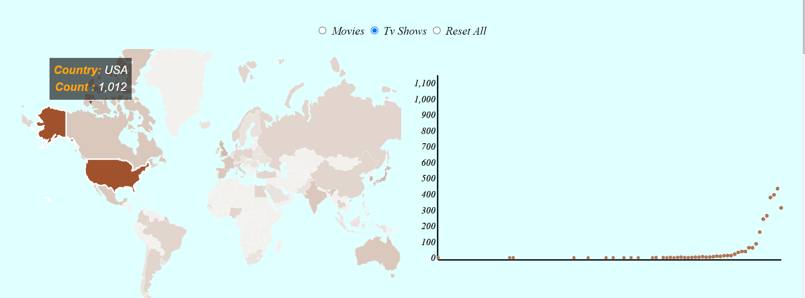
- We understood that highest and lowest rating can't be found as the ratings are given in the form of TV-MA,TV-14 and R. We have understood the distribution of different genre movies by rating by providing the interaction between bar graph of genre and pie chart of rating.
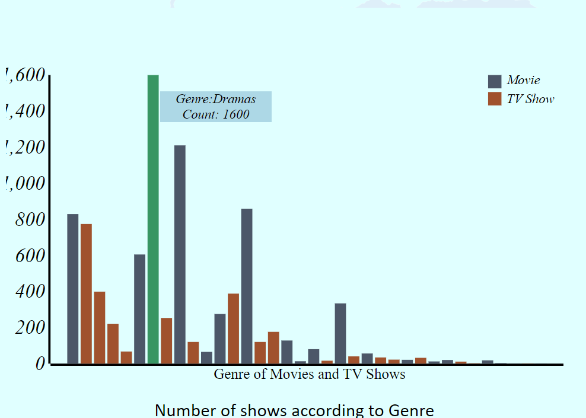
- Movies and TV shows were shown according to rating through the pie chart, again the most popular show based on rating could not be found because of the rating format, but the distribution of shows by rating was shown.The highest rating group is TV-MA
with 36.42% and lowest rating group is NC-17 with 0.03%
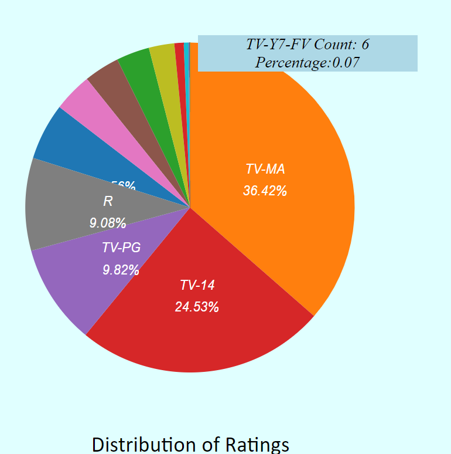
- In addition to the posed questions, we observed the shows by duration and got to know that hightest duration movie is Black Mirror: Bandersnatch with a duration of 312 min and tv show is Grey's Anatomy with 17 seasons.
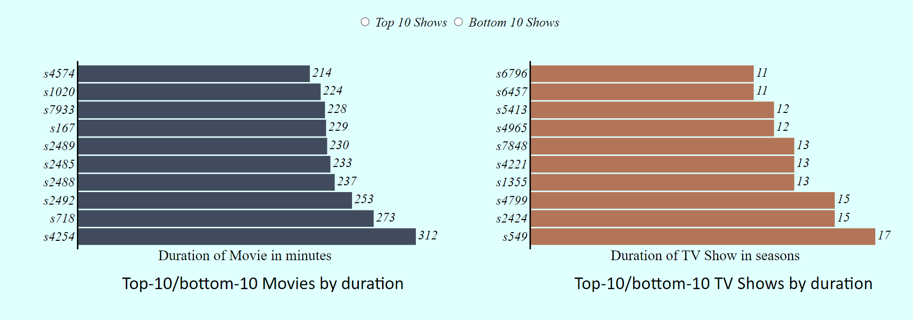
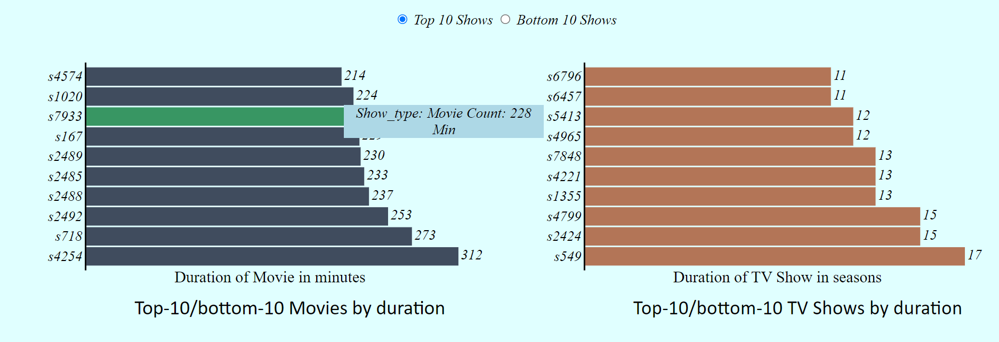
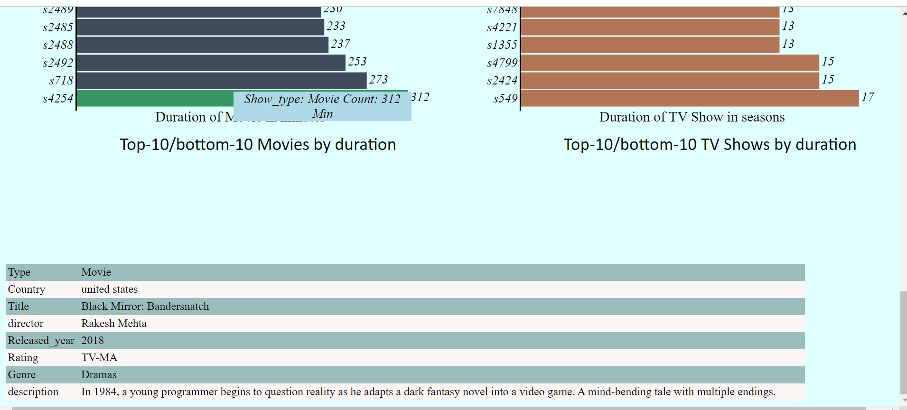
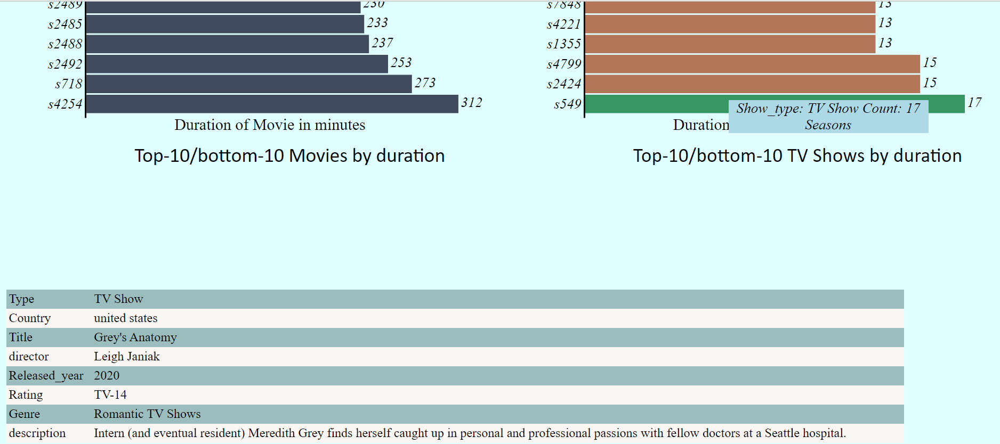
References:
https://github.com/scotthmurray/d3-book
https://www.d3-graph-gallery.com/graph/interactivity_zoom.html
https://bl.ocks.org/cagrimmett/07f8c8daea00946b9e704e3efcbd5739
https://chartio.com/resources/tutorials/how-to-show-data-on-mouseover-in-d3js/
https://www.google.com/search?q=w3+schools&oq=w3+schools&aqs=chrome..69i57j69i59j0i10i512l3j69i60l3.3969j0j7&sourceid=chrome&ie=UTF-8